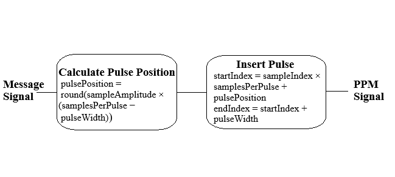

Step 1: Click on 'Generate Message' button to generate the input message signal
Step 2: Then click on 'Generate PPM Pulse Train' button to generate the PPM Pulse Train signal. You can change the message and Sampling signal frequencies from the input fields. The sampling frequency has to be much higher than the message frequency
Step 3: Click on 'Generate PPM Signal' button to generate Pulse Width Modulated (PPM) Signal
Here, pulse Width Fraction is a fraction of the total interval, and Samples Per Pulse is the total number of samples that span one pulse interval. Pulse Width = round(ppm Width Fraction × Samples Per Pulse) (all in the terms of the number of samples)

Instructions for Pulse Position Demodulation
Step 1: To demodulate a Pulse Position Modulated (PPM) signal, a reference pulse generator creates a timing pulse train, which is used to synchronize with the PPM signal. An RS flip-flop ensures accurate pulse generation, while a PWM demodulator measures the width of the PPM pulses and converts this width into a corresponding signal representing the original message
Step 2: You can demodulate the PPM Signal by clicking on the 'Demodulate PPM Signal' button